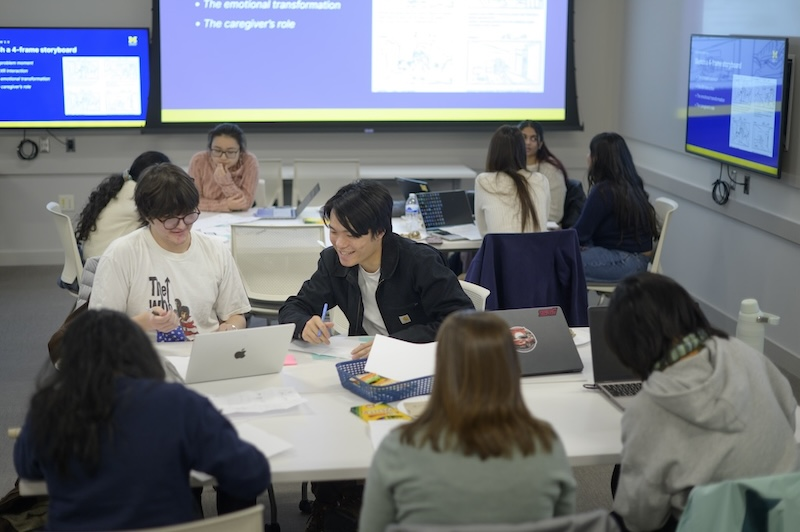

Transform your academic knowledge into real-world impact. Use this guide to understand your project context, evaluate team readiness, establish expectations, and begin a productive partnership.
Why the Work Starts Before the Project
Engaged learning at UMSI is fundamentally different from traditional classroom assignments. You are stepping out of controlled environments and into complex, unscripted ecosystems where technical solutions intersect with human lives, organizational cultures, and real community needs.
The initial phase of a project is rarely about jumping straight into execution—it is about building the foundation for ethical, sustainable engagement. Taking time to reflect on your own positionality, audit your team’s collective skills, and listen deeply to your partner’s goals prevents project failure down the line. When you ground your project in mutual respect, clear boundaries, and honest communication from Day 1, you transform a simple class deliverable into a reciprocal partnership that creates authentic value for everyone involved.
Phase 1: Preparing for the Experience
Before creating a solution, take time to understand the context, evaluate your team's readiness, and identify what you still need to learn.
Approach the Work as a Collaborative Learner
Before writing code, sketching wireframes, or analyzing data, consider how your identity and previous experiences influence the way you understand the project.
Your role is not to enter an organization or community as an outside expert who will fix a problem. Your role is to listen, ask questions, contribute your developing expertise, and work alongside people who understand their organization and community.
Preparation Goals
Develop social and community awareness: Examine your identity, positionality, assumptions, and privileges. Learn about the community's history and consider how power may affect participation and decision-making.
Understand expectations: Review program requirements, project commitments,leadership responsibilities, deadlines, and expected outcomes before beginning the work.
Assess team readiness: Identify each team member's skills, interests, vailability, responsibilities, and learning goals. Determine where the team may need additional knowledge or support.
Begin project scoping: Learn about the organization's needs, intended users, constraints, and desired outcomes before committing to a solution.
Questions to Consider
What do I hope to learn from this experience?
Who will be affected by the project and its outcomes?
What assumptions am I making about the partner, community, or project?
What knowledge and skills does my team already have?
What knowledge or perspectives are missing from our team?
How will the partner participate in project decisions?
What would a mutually beneficial outcome look like?
Recommended Preparation Process
Reflect on your position: Identify the experiences, identities, assumptions, and areas of privilege that may shape your approach.
Learn about the context: Research the organization, community, project history, affected stakeholders, and broader social conditions.
Set learning goals: Record the technical, professional, interpersonal, and ethical skills you want to develop.
Review team capacity:Compare the team's skills and availability with the likely needs of the project.
Identify open questions: Write down what your team needs to learn from the partner before confirming the project's scope, methods, or deliverables.
Featured Preparation Resources
Social Identity Snapshot: Diagnostic tool to reflect on self-awareness and positionality before entering community contexts.
Project Management Worksheet: Guidance on clarifying the project scope and objectives, team roles, and timeline. This worksheet can be used by the project team and shared with the client.

UMSI Design Jam Event
Phase 2: Starting the Experience
Once you have a clear understanding of the project context, your team’s capacity, and the partner’s goals, you can begin to define the project scope, methods, and deliverables. This phase is about translating preparation into action while maintaining ethical engagement and open communication.
Build the Partnership from Day One
First impressions can shape the direction of an entire project.
The starting phase turns an initial project idea into a structured
working relationship between your team and your partner.
Use this stage to establish clear communication, define expectations,
and agree on how your team and partner will work together. Addressing
uncertainty early can help build trust and create a stronger foundation
for the rest of the project.
Starting Goals
Establish professional communication:
Reach out to your partner clearly and professionally, introduce
your team, and establish appropriate communication channels.
Prepare for the first meeting:
Create an agenda that helps your team learn about the partner,
clarify project needs, and identify important questions.
Define roles and expectations:
Discuss what the student team, project manager, and partner are
responsible for throughout the project.
Confirm the project scope:
Develop a shared understanding of project goals, deliverables,
boundaries, timelines, and methods of communication.
Questions to Consider
Who should be the primary point of contact between the team and the partner?
How often should the team communicate with the partner?
What does the partner expect the team to deliver?
What responsibilities belong to the student team and what responsibilities belong to the partner?
What questions still need to be answered before the project scope can be finalized?
How will changes to the project scope or timeline be communicated?
How will the team and partner know whether the project is progressing successfully?
Recommended Starting Process
Make initial contact:
Introduce your team, explain the purpose of the project,
and establish a professional communication channel.
Prepare for the kickoff meeting:
Create an agenda, review what your team already knows,
and prepare questions about the partner's goals and needs.
Conduct the first meeting:
Learn about the organization, discuss project expectations,
identify constraints, and clarify how the partner would like
to participate.
Align on scope and responsibilities:
Confirm project goals, deliverables, team and partner roles,
communication practices, and important deadlines.
Document the agreement:
Record the decisions made with your partner and make sure
everyone has access to the same expectations and project plan.